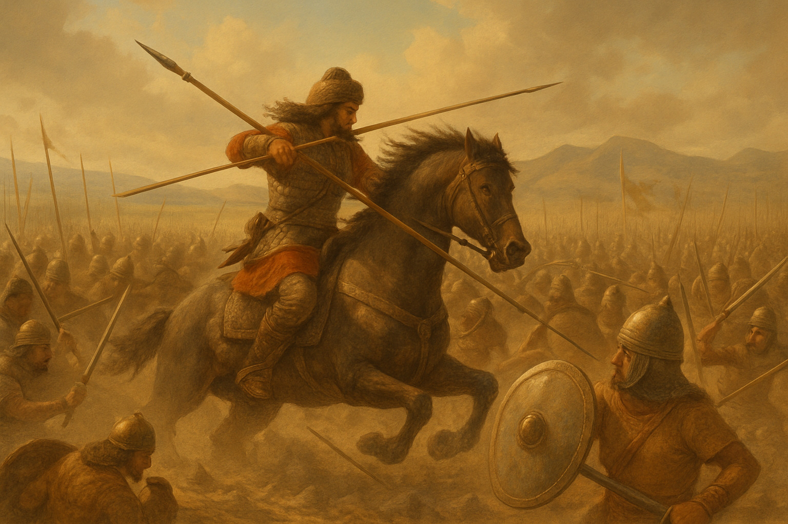

Про проєкт
ВОЛЯ — це глибоко сюжетна 3D Action-Adventure гра, що занурює гравця у тисячолітню історію боротьби українського народу за свою свободу. Це не просто гра, це емоційна подорож крізь віки, де гравець перевтілюється у ключових предків головного героя — сучасного українського воїна.
Від мирних землеробів Трипілля до незламних лицарів Київської Русі, від відважних козаків до повстанців XX століття — у кожному з цих героїв живе одна незмінна сила, одна мета: боротися за ВОЛЮ. Це сага про нерозривний зв'язок поколінь, про пам'ять крові та духу, що передається крізь віки, щоб ожити в найкритичніший момент сучасності.
Особливості гри
- Масштабний Наратив: Більше 16+ годин захопливого геймплею, що охоплює сім ключових історичних епох України.
- Багатогранні Персонажі: Перевтілюйтеся у різних предків Олеся, кожен з яких є втіленням унікального аспекту "Волі" та має власні, автентичні геймплейні механіки та сюжетні лінії.
- Гібридний Дизайн Світу: Поєднання великих відкритих світів (Київська Русь), деталізованих напіввідкритих локацій (Скіфи, Козаччина) та інтенсивних лінійних сегментів (УПА, Сучасність), що забезпечує різноманіття та динаміку ігрового процесу.
- Еволюція Геймплею: Динамічна зміна ігрових механік від мирного будівництва та виживання до складної бойової системи, стратегічного планування, стелсу та глибокої дипломатії, адаптованих до особливостей кожної доби.
- Кінематографічна Подача: Глибокий, емоційний сюжет, розкритий через високоякісні катсцени та діалоги, що передають драму та героїзм кожної епохи.
- Історична Достовірність: Ретельне вивчення та інтеграція реальних історичних подій, побуту, культури та міфології, що робить гру не лише розвагою, а й освітнім досвідом.
- Моральні Вибори: Гравцю доведеться робити важкі моральні вибори, які впливатимуть на розвиток сюжету, долю персонажів та, що найважливіше, на рівень "Волі" — ключової внутрішньої сили.
Наші Герої

Олесь ("Козак") — сучасний воїн, що несе на собі тисячоліття боротьби.
Зоряна — трипілька, чиє серце вперше відчуло невідомий поклик Волі.

Аргіс — скіфський воїн, що втілює дух свободи та степу.
Крізь віки гравці зануряться в долі інших предків Олеся — від скіфських кочівників та слов'янських вождів до лицарів Русі та відважних козаків. Кожен герой — це пращур Олеся, і саме через їхні долі гравець переживе історію незламного духу українського народу.
Епохи "ВОЛІ"
Подорож Крізь Тисячоліття
Зануртесь у сім докорінно різних, але взаємопов'язаних епох української історії. Кожна доба — це не просто декорація, а цілісний ігровий світ зі своїми унікальними викликами, персонажами та геймплейними можливостями.

Вид на одне з давніх трипільських поселень.

Мистецьке зображення скіфського воїна на коні — символ духу степу та волі.
- **Кам'яний Вік та Енеоліт (Трипільська Культура):** Зародження цивілізації, гармонія з природою та перші прояви співчуття і вибору.
- **Скіфська Доба:** Свобода безкрайніх степів, виживання, мисливство та формування духу незалежності.
- **Давні Слов'яни:** Племінне життя, пошук єдності та протистояння першим викликам, що формує волю до самовизначення.
- **Київська Русь:** Епоха державотворення, лицарства, захисту кордонів та запеклої боротьби за віру та ідентичність.
- **Козацька Доба:** Час героїзму, боротьби за волю та зради, що визначила подальший шлях нації.
- **XX століття (Визвольна Боротьба):** Період відчайдушного опору та незламної волі до свободи у найжорстокіших умовах.
- **Сучасність:** Кульмінація боротьби, де дух усіх предків об'єднається для вирішального протистояння.
Кожна епоха є важливою главою у великій сазі "ВОЛІ", де минуле формує сьогодення, а дії кожного предка відгукуються у фінальному протистоянні.
Механіка "Волі"
Ключовою особливістю гри є механіка "Волі" — це не просто сюжетний елемент, а інтегрована частина геймплею, що відображає внутрішню силу, рішучість та незламність духу героїв.
- **Накопичення "Волі":** "Воля" накопичується за рахунок:
- Прийняття важливих моральних виборів, що сприяють злагоді, співчуттю та єдності.
- Успішних переговорів, досягнення компромісів та налагодження союзів.
- Виконання завдань, що вимагають мудрості, переконання та уникнення конфліктів.
- Дослідження світу та знаходження прихованих знань, що посилюють розуміння та вплив.
- **Вплив на Геймплей:** Накопичена "Воля" може:
- Розблоковувати унікальні діалогові опції, що дозволяють переконувати NPC, змінювати їхнє ставлення до героя та впливати на хід подій.
- Надавати перевагу в переговорах, розкривати приховані мотиви та допомагати знаходити мирні вирішення конфліктів.
- Бути ключовим ресурсом для активації певних здібностей, пов'язаних з лідерством та впливом на маси.
- **Фінальна Кульмінація:** Рівень накопиченої "Волі" протягом усіх епох безпосередньо вплине на фінал гри, дозволяючи Олесю закликати духовних провідників та мудреців з минулого для вирішального протистояння.
Наша Команда
Ми — команда ентузіастів, об'єднаних спільною мрією: створити гру, яка не лише розважатиме, а й розповість світові про незламний дух та багатовікову історію України. Наша мета — втілити в життя унікальний геймплейний та наративний досвід.
Наразі ми активно шукаємо талановитих фахівців, щоб посилити наш проєкт. Якщо ви маєте пристрасть до ігор, історії та вірите у силу українського духу, ми запрошуємо вас приєднатися!